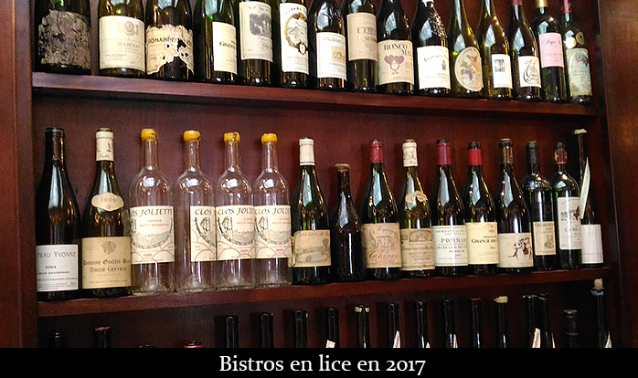

Candidats pour l'année 2017
Liste provisoire des bistros entrés en lice en 2017 :
Le Select Monceau
95 rue de Miromesnil, 75008
Le Passage
46 rue des Fossés Saint-Bernard, 75005
Les Petits Insolents
2 Place Léon Deubel, 75016
Les Colonnes
65 Rue du Général Leclerc, 92130 Issy-les-Moulineaux
Le Mistral
401 rue des Pyrénnées, 75020 PARIS
Le Réveil du Xe
35 rue Bouchardon, 75010
Lauréats de l'année 2016
Les diplômés sont:
Le P'tit Zinc
2, rue des Plantes, 75014 PARIS
Eric Mauboussin
La Tute
7 rue Rossini, 75009 PARIS
Emmanuel Maquaire
L'Envie du Jour
6 rue Nollet, 75017 PARIS
Sergio Lino
Le Verre à Vin
215 rue de Bercy, 75012 PARIS
Christophe Chenal et Rémy Demulder
Au Bougnat
26 rue Chanoinesse, 75004 PARIS
Julien Guillut